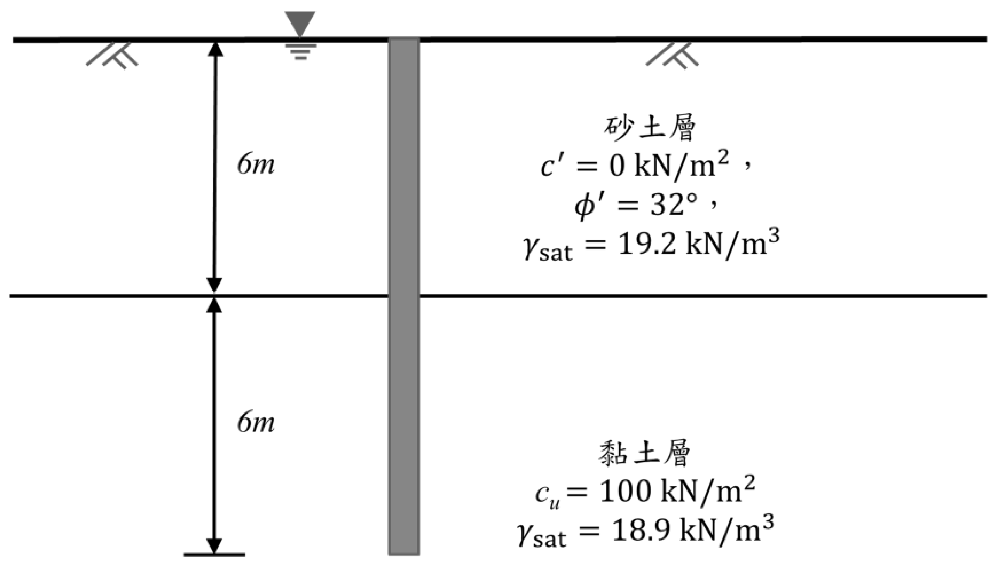
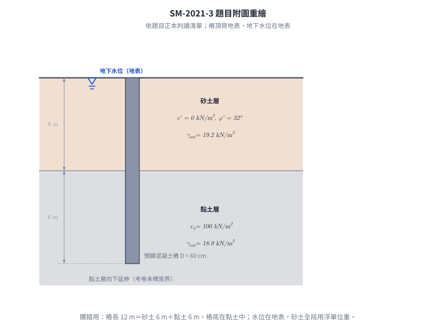
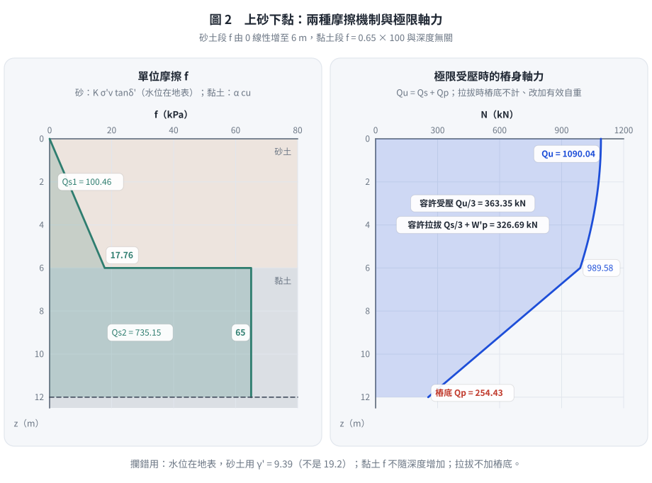

📄 題目正本：考卷原文・附圖・判讀清單（已確認）
SM-2021-3 題目正本
本檔只記錄考卷上寫了什麼、圖上畫了什麼，不含任何解法。解析見同資料夾
SM-2021-3.md。
判讀清單已確認（凍結）；本檔原則上不再修改（改動須回考卷原圖並記 log）。
| 項目 | 內容 |
|---|---|
| 考卷 | raw/exams/SM-2021_土壤力學與基礎設計.pdf 第 3 頁（頁次 4－3），第三題 |
| 考年 | 民國 110 年（2021） |
| 配分 | 25 分 |
| 附圖 | SM-2021-3-fig-2.png（地層與基樁剖面；2026-11-15 由考卷重新擷取 500 dpi）；既有 SM-2021-3-fig-1.png 為同一圖，砂土層參數右側有滑鼠游標，保留不刪 |
| 判讀狀態 | 已確認（2026-11-15 關卡一：使用者授權依建議判讀確認；轉錄 2026-11-15；PyMuPDF 110 dpi 全頁目視，附圖 500 dpi 局部放大（內嵌點陣影像兩張上下拼接，bbox (91.9, 316.6)–(503.3, 551.8)）；盲讀後才比對既有解析） |
1. 考卷原文（逐字）
三、有一長度 12 m，直徑 60 cm 之圓形預鑄混凝土基樁，如下圖所示，貫入於 6 m 厚之砂土層及其下之黏土層中，地下水位於地表面。已知砂土層之 $c'$ = 0 kN/m²，$\phi'$ = 32°，$\gamma_{sat}$ = 19.2 kN/m³，而黏土層之 $c_u$ = 100 kN/m²，$\gamma_{sat}$ = 18.9 kN/m³。使用安全係數 FS = 3 進行下列計算：（25 分）
㈠請計算此基樁之容許垂直支承力；
㈡請計算此基樁之容許拉拔力。
註：1.假設此基樁之側向土壓力係數 $K$ = 1.4 $K_o$。
2.假設砂土-混凝土基樁之摩擦角 $\delta'$ = 0.8 $\phi'$。
3.於考慮基樁表面附著力時，α 值假設為 0.65。
4.於 $\phi$ = 0° 時，假設基樁承載值因數 $N_C^*$ = 9。
5.混凝土基樁單位重 = 24 kN/m³。
2. 考卷給的公式、附表與參數
- 基樁：圓形預鑄混凝土，長 12 m、直徑 60 cm，單位重 24 kN/m³。
- 砂土層（0～6 m）：$c'$ = 0、$\phi'$ = 32°、$\gamma_{sat}$ = 19.2 kN/m³。
- 黏土層（6 m 以下）：$c_u$ = 100 kN/m²、$\gamma_{sat}$ = 18.9 kN/m³。
- 地下水位於地表面；FS = 3。
- 註：$K = 1.4K_o$；$\delta' = 0.8\phi'$；α = 0.65；$\phi = 0$ 時 $N_c^*$ = 9。
- 沒有給：$K_o$ 的公式、$\gamma_w$、臨界深度、樁自重在垂直支承力與拉拔力中如何計入、拉拔時是否計樁底阻抗。
- 卷首注意事項：可以使用電子計算器。不必抄題，作答時請將試題題號及答案依照順序寫在試卷上，於本試題上作答者，不予計分。本科目除專門名詞或數理公式外，應使用本國文字作答。
3. 附圖

圖面文字照錄：6m、6m、砂土層、c′ = 0 kN/m²，、ϕ′ = 32°，、γsat = 19.2 kN/m³、黏土層、cu = 100 kN/m²、γsat = 18.9 kN/m³。
4. 判讀清單
| # | 項目 | 判讀 | 圖上／題文依據 | 把握 |
|---|---|---|---|---|
| 1 | 樁自重的計入方式 | 考卷給單位重 24 → ㈡拉拔：容許拉拔力 = 樁身摩擦/FS ＋ 樁有效自重（水位在地表，用 24−γw）；㈠垂直：容許支承力 = (Qp+Qs)/FS，不另扣樁自重 | 註 5 給單位重但未說用法 | 不確定（影響答案）；使用者授權依建議確認 |
| 2 | $K_o$ | 考卷沒給公式；用 Jaky 式 $K_o = 1-\sin\phi'$ | 註 1 | 確定（解讀） |
| 3 | 地層與樁長 | 砂土 0～6 m、黏土 6～12 m（樁底在黏土中，黏土厚度向下延伸未標） | 附圖左側兩段 6m 尺寸線，下段下端橫線與樁底同高 | 確定 |
| 4 | 樁頭位置 | 樁頂齊地表 | 附圖灰色樁頂與地表線同高 | 確定 |
| 5 | 地下水位 | 地表（附圖水位符號在地表） | 題文與附圖 | 確定 |
| 6 | 臨界深度 | 考卷沒提；砂土只有 6 m（10D = 6 m），砂土段的 $\sigma'_v$ 直接隨深度線性計算 | 題文未提臨界深度 | 確定（解讀） |
| 7 | 樁底承載 | 樁底在黏土，$Q_p = 9c_uA_p$ | 註 4 | 確定 |
| 8 | 拉拔時樁底 | 拉拔不計樁底阻抗（吸力） | 一般慣例；題文未提 | 確定（解讀） |
| 9 | 所求 | ㈠容許垂直支承力；㈡容許拉拔力；FS = 3 | 題文 | 確定 |
| 10 | 考卷沒有給 | $K_o$ 公式、$\gamma_w$、臨界深度、自重用法 | 全題 | 確定 |
轉錄：2026-11-15（SM-U2-2 題目正本推廣・批 1）
確認：2026-11-15 使用者授權依建議判讀確認（SM-U2-2 題目正本推廣・批 1，關卡一；使用者指示「要我確認的請依你建議」）
考題編號：SM-2021-3
主分類： SM-U2-2 深基礎之支承力與沉陷量
副分類： 無
分析法： 混合
標籤： 樁基承載力 α法 β法 端點承載力 摩擦力 抗拔力
1. 題目（考卷原文見題目正本）
考卷原文、公式／附表、附圖與判讀清單（已確認）見
SM-2021-3-problem.md。本節只列解題時最容易讀錯的地方與本解使用的記號；題意以題目正本為準。

重繪自考卷附圖，依題目正本判讀清單 #3–#5；攔下的判讀錯誤：樁底在黏土中、水位在地表（砂土全段用浮單位重）。
常見誤讀
| 項目 | 正確判讀 | 常見誤讀 |
|---|---|---|
| 樁自重的用法 | ㈠容許垂直支承力 $=(Q_p+Q_s)/FS$，不另扣自重；㈡容許拉拔力 $=Q_s/FS+W'_p$，$W'_p$ 用 $24-\gamma_w$（題目正本 #1，已確認） | ㈡寫成 $(Q_s+W'_p)/FS$，或自重不扣浮力 |
| $K_o$ | 考卷沒給公式，用 Jaky 式 $1-\sin\phi'$（#2） | 直接取 $K=1.4$ |
| 拉拔時樁底 | 不計樁底阻抗（#8） | 拉拔也加 $Q_p$ |
本解記號： $Q_{s1}$ 砂土段摩擦；$Q_{s2}$ 黏土段附著力；$Q_p$ 樁底承載；$W'_p$ 樁有效自重；$Q_{a,comp}$、$Q_{a,uplift}$ 容許垂直支承力與容許拉拔力。
2. 考題核心精神與出題者意圖 (Core Concepts & Examiner's Intent)
本題旨在測驗考生對於深基礎（基樁）垂直承載力與拉拔力的綜合計算能力，包含：
- 分層土壤之摩擦力計算：砂土層需使用有效應力法（$\beta$ 法之變形，利用給定的 $K$ 與 $\delta'$），而黏土層需使用總應力法（$\alpha$ 法）。
- 基樁端點承載力：辨識出樁尖位於黏土層中，需使用不排水抗剪強度 $c_u$ 計算端點承載力。
- 拉拔力與自重效應：計算拉拔力時，基樁的有效重量（浮力扣除後之重量）為抗拉拔之可靠來源，此為提供混凝土單位重的核心意圖。
3. 解題戰略地圖與陷阱分析 (Strategic Roadmap & Trap Analysis)
解題策略：
- 幾何與基本參數：先計算基樁之斷面積 $A_p$、周長 $p$、體積 $V_p$ 及有效單位重。
- 樁身摩擦力 ($Q_s$)：
- 砂土層 ($Q_{s1}$)：計算深度 0~6 m 處的有效覆土壓力 $\sigma_v'$，求出平均有效應力 $\bar{\sigma}_v'$，再代入 $f_s = K \bar{\sigma}_v' \tan\delta'$ 求解。
- 黏土層 ($Q_{s2}$)：直接利用 $\alpha$ 法，$f_s = \alpha c_u$ 求解。
- 樁端承載力 ($Q_p$)：利用 $q_p = c_u N_c^*$ 求解。
- 容許垂直支承力：將總極限承載力除以安全係數 $FS=3$。
- 容許拉拔力：極限拉拔力為總摩擦力 $Q_s$ 加上基樁之有效重量 $W_p'$。通常自重為常數不折減，故 $T_a = Q_s/FS + W_p'$。
陷阱分析：
- 陷阱 1：地下水位影響（浮力）。水位在地表，全區土壤及基樁均在水下，所有單位重均需扣除水的單位重（$\gamma_w = 9.81 \text{ kN/m}^3$）轉為有效單位重。
- 陷阱 2：黏土層之 $\gamma_{\text{sat}}$ 用途。黏土層的摩擦力採用 $\alpha$ 法，與有效應力無關；端點承載力 $q_{p,\text{net}} = c_u N_c^*$ 亦與有效應力無關。因此，$\gamma_{\text{sat}} = 18.9 \text{ kN/m}^3$ 在淨承載力算法中為多餘資訊（Distractor）。若採用總承載力法才需要用到。
- 陷阱 3：拉拔力之安全係數應用。基樁自重 $W_p'$ 屬於重力抵抗，其值確定性高，實務上通常不除以安全係數，即 $T_a = (Q_s/FS) + W_p'$，而非 $(Q_s + W_p')/FS$。
3.5 變數層次分析 (Variable Hierarchy Analysis)
最終目標
計算基樁的容許垂直支承力 $Q_{a,\text{comp}}$ 與容許拉拔力 $Q_{a,\text{uplift}}$。
本題關鍵公式（依計算順序）
-
砂土層底部有效應力：
$$ \sigma'_{v,6m} = (\gamma_{\text{sat,sand}} - \gamma_w) \cdot L_{\text{sand}} $$ -
砂土層樁身摩擦力：
$$ Q_{s1} = K \cdot \left(\frac{0 + \boxed{\sigma'_{v,6m}}}{2}\right) \cdot \tan\delta' \cdot (\pi D) \cdot L_{\text{sand}} $$ -
黏土層樁身摩擦力：
$$ Q_{s2} = \alpha \cdot c_u \cdot (\pi D) \cdot L_{\text{clay}} $$ -
樁端淨承載力：
$$ Q_p = c_u \cdot N_c^* \cdot \frac{\pi}{4} D^2 $$ -
容許垂直支承力：
$$ Q_{a,\text{comp}} = \frac{\boxed{Q_{s1}} + \boxed{Q_{s2}} + \boxed{Q_p}}{FS} $$ -
基樁有效重量：
$$ W'_p = (\gamma_{\text{pile}} - \gamma_w) \cdot \frac{\pi}{4} D^2 \cdot L_{\text{total}} $$ -
容許拉拔力：
$$ Q_{a,\text{uplift}} = \frac{\boxed{Q_{s1}} + \boxed{Q_{s2}}}{FS} + \boxed{W'_p} $$
L1：題目直接給定
| 符號 | 數值 | 說明 |
|---|---|---|
| $D$ | $0.6 \text{ m}$ | 基樁直徑 |
| $L_{\text{sand}}$ | $6 \text{ m}$ | 砂土層中樁長 |
| $L_{\text{clay}}$ | $6 \text{ m}$ | 黏土層中樁長 |
| $\gamma_{\text{sat,sand}}$ | $19.2 \text{ kN/m}^3$ | 砂土層飽和單位重 |
| $\phi'$ | $32^\circ$ | 砂土有效摩擦角 |
| $c_u$ | $100 \text{ kN/m}^2$ | 黏土不排水抗剪強度 |
| $FS$ | $3$ | 安全係數 |
| $K$ | $1.4 K_o$ | 側向土壓力係數 |
| $\delta'$ | $0.8 \phi'$ | 樁-土介面摩擦角 |
| $\alpha$ | $0.65$ | 黏土附著力係數 |
| $N_c^*$ | $9$ | 黏土層基樁承載值因數 |
| $\gamma_{\text{pile}}$ | $24 \text{ kN/m}^3$ | 混凝土單位重 |
L2：需知識點推導
砂土層參數與摩擦力
| 符號 | 公式／來源 | 卡關? |
|---|---|---|
| $K_o$ | $1 - \sin\phi'$ | |
| $\sigma'_{v,6m}$ | $(\gamma_{\text{sat,sand}} - \gamma_w) \cdot L_{\text{sand}}$ | |
| $f_{s1}$ | $K \cdot \bar{\sigma}'_v \cdot \tan\delta'$ | |
拉拔力與自重
| 符號 | 公式／來源 | 卡關? |
|---|---|---|
| $W'_p$ | $V_p \cdot (\gamma_{\text{pile}} - \gamma_w)$ | |
L3：深層知識（不懂就卡住）
| 知識點 | 說明 | 卡關? |
|---|---|---|
| 浮力效應 | 地下水位在地表，所有土壤與基樁自重皆需使用「有效單位重（$\gamma'$）」計算。 | |
| 拉拔力折減邏輯 | 極限拉拔力包含土壤摩擦力與基樁有效自重，但安全係數通常只折減土壤摩擦力，自重為恆載不折減。 |
4. 步驟化詳細計算過程 (Step-by-Step Detailed Calculation)
本題計算統一取水的單位重 $\gamma_w = 9.81 \text{ kN/m}^3$。
Step 1：基樁幾何性質計算
- 樁截面積：$A_p = \frac{\pi}{4} D^2 = \frac{\pi}{4} \times (0.6)^2 = 0.2827 \text{ m}^2$
- 樁周長：$p = \pi D = \pi \times 0.6 = 1.8850 \text{ m}$
- 樁總長度：$L = L_{\text{sand}} + L_{\text{clay}} = 6 + 6 = 12 \text{ m}$
- 樁總體積：$V_p = A_p \times L = 0.2827 \times 12 = 3.3929 \text{ m}^3$
- 基樁有效重量：
$$ W_p' = V_p \times (\gamma_{\text{pile}} - \gamma_w) = 3.3929 \times (24 - 9.81) = 3.3929 \times 14.19 = 48.15 \text{ kN} $$
Step 2：計算砂土層之樁身摩擦力 ($Q_{s1}$)
深度區間：$0 \sim 6 \text{ m}$
- 砂土有效單位重：$\gamma'_{s} = 19.2 - 9.81 = 9.39 \text{ kN/m}^3$
- 靜止土壓力係數（Jaky 經驗公式）：$K_o = 1 - \sin(32^\circ) = 1 - 0.5299 = 0.4701$
- 側向土壓力係數：$K = 1.4 \times K_o = 1.4 \times 0.4701 = 0.6581$
- 介面摩擦角：$\delta' = 0.8 \times 32^\circ = 25.6^\circ$ ($\tan 25.6^\circ = 0.4791$)
-
砂土層底部 ($z=6\text{m}$) 之有效覆土壓力：
$$ \sigma'_{v,6} = \gamma'_{s} \times 6 = 9.39 \times 6 = 56.34 \text{ kN/m}^2 $$ -
砂土層平均單位摩擦力：
$$ f_{s1} = K \cdot \bar{\sigma}'_v \cdot \tan\delta' = 0.6581 \times \left(\frac{0 + 56.34}{2}\right) \times 0.4791 = 8.88 \text{ kN/m}^2 $$ -
砂土層摩擦力：
$$ Q_{s1} = f_{s1} \cdot p \cdot L_{\text{sand}} = 8.88 \times 1.8850 \times 6 = 100.46 \text{ kN} $$
Step 3：計算黏土層之樁身摩擦力 ($Q_{s2}$)
深度區間：$6 \sim 12 \text{ m}$
-
黏土層單位摩擦力（$\alpha$ 法）：
$$ f_{s2} = \alpha \cdot c_u = 0.65 \times 100 = 65 \text{ kN/m}^2 $$ -
黏土層摩擦力：
$$ Q_{s2} = f_{s2} \cdot p \cdot L_{\text{clay}} = 65 \times 1.8850 \times 6 = 735.15 \text{ kN} $$策略註解：總樁身摩擦力 $Q_s = Q_{s1} + Q_{s2} = 100.46 + 735.15 = 835.61 \text{ kN}$。
Step 4：計算樁端承載力 ($Q_p$)
樁端位於深度 $12 \text{ m}$ 處（黏土層中）。
-
單位淨端點承載力：
$$ q_p = c_u \cdot N_c^* = 100 \times 9 = 900 \text{ kN/m}^2 $$ -
樁端淨承載力：
$$ Q_p = q_p \cdot A_p = 900 \times 0.2827 = 254.43 \text{ kN} $$

圖 2 上砂下黏兩種摩擦機制。砂土段用 $\gamma'$ 所以 $f$ 很小、黏土段 $f=\alpha c_u$ 與深度無關。攔下「水位在地表卻用 $\gamma_{sat}$」與「拉拔也加樁底」的錯誤。
Step 5：(一) 計算容許垂直支承力 ($Q_{a,\text{comp}}$)
極限淨垂直承載力 $Q_{u,\text{net}}$ 等於總摩擦力加端點淨承載力：
$$ Q_{u,\text{net}} = Q_s + Q_p = 835.61 + 254.43 = 1090.04 \text{ kN} $$
容許垂直支承力：
$$ Q_{a,\text{comp}} = \frac{Q_{u,\text{net}}}{FS} = \frac{1090.04}{3} = \boxed{363.35 \text{ kN}} $$
Step 6：(二) 計算容許拉拔力 ($Q_{a,\text{uplift}}$)
極限拉拔力 $T_u$ 由土壤側摩擦力與基樁有效自重共同抵抗：
$$ T_u = Q_s + W_p' $$
策略註解：考量基樁自重屬於確定性高的重力抵抗，實務上安全係數通常僅針對「土壤抗力（摩擦力）」進行折減。
容許拉拔力：
$$ Q_{a,\text{uplift}} = \frac{Q_s}{FS} + W_p' = \frac{835.61}{3} + 48.15 = 278.54 + 48.15 = \boxed{326.69 \text{ kN}} $$
5. 關鍵爭議點與進階探討 (Critical Issues & Advanced Discussion)
- 淨承載力與總承載力之差異：
- 本解析採用淨承載力法（Net Bearing Capacity），即視 $c_u N_c^*$ 為淨抗力，並忽略基樁有效重量與被開挖土壤有效重量之間的差異，此為深基礎分析最常被接受的作法。
-
若採用總承載力法（Gross Bearing Capacity），端點總承載力為 $q_{p,\text{gross}} = c_u N_c^* + \sigma'_{v,\text{tip}}$。此時 $\sigma'_{v,\text{tip}} = 6 \times 9.39 + 6 \times (18.9 - 9.81) = 110.88 \text{ kPa}$。這解釋了題目給定黏土層 $\gamma_{\text{sat}} = 18.9 \text{ kN/m}^3$ 的可能用途。然而，若以總承載力除以 FS 後再扣除基樁重量求容許結構載重（$P_{\text{allow}} = Q_{u,\text{gross}}/FS - W_p'$），概念上會將上覆土重帶入折減，學理上並不完全合理，故推薦使用淨承載力法。
-
拉拔力安全係數折減對象：
- 本文採用 $T_a = (Q_s / FS) + W_p'$，將安全係數僅施加於不確定性較高的土壤摩擦力。
-
某些考場解法可能採用較保守的整體折減公式 $T_a = (Q_s + W_p') / FS$。若採此法，容許拉拔力為 $(835.61 + 48.15) / 3 = 294.59 \text{ kN}$。考場上強烈建議寫出算式以明示自身採用的折減邏輯，通常前者的工程學理基礎更為堅實。
-
水單位重的選用：
- 本題未指明水的單位重，採 $\gamma_w = 9.81 \text{ kN/m}^3$ 或 $10 \text{ kN/m}^3$ 皆屬合理範圍。若採 $\gamma_w = 10 \text{ kN/m}^3$，求得之 $Q_{a,\text{comp}} \approx 362.7 \text{ kN}$、$Q_{a,\text{uplift}} \approx 325.4 \text{ kN}$，差異均在 1% 內，不影響給分。
修正日期：2026-11-15（§1 改為指向題目正本 SM-2021-3-problem.md，重繪附圖 figs/SM-2021-3-fig-1-problem.svg；§4 Step 4 後 補解題圖解 figs/SM-2021-3-fig-2-resistance.svg；非勘誤）